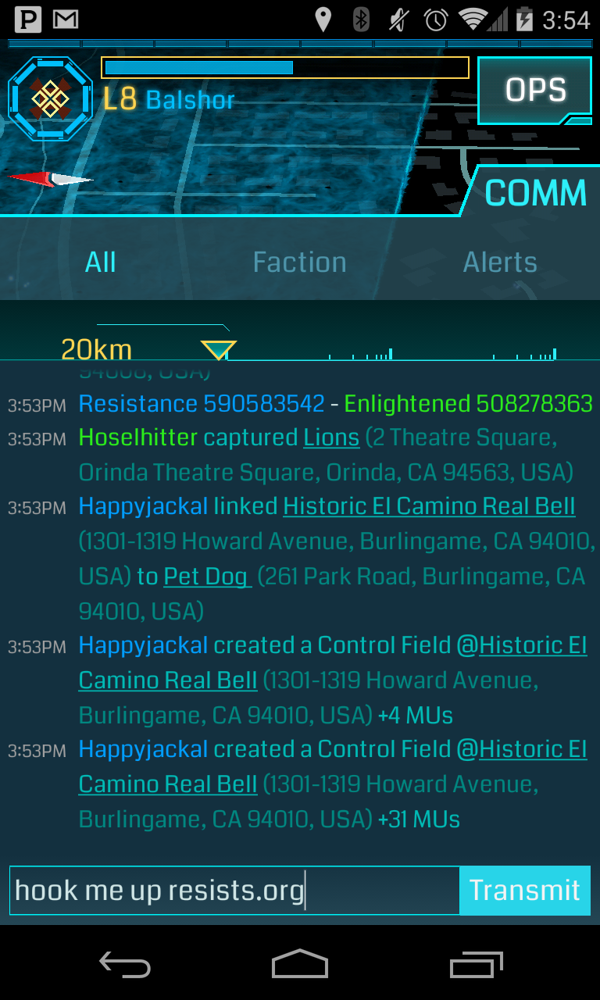
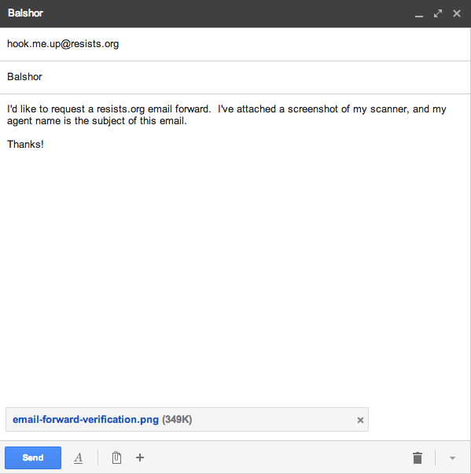

Email Forwarding
We also provide email forwarding for verified* Resistance agents. To apply for an email alias,
follow these instructions:
-
Open your scanner and type "hook me up resists.org" into the chat box. You do not actually need to transmit the message.

- Take a screenshot, making sure that both your agent handle and the above message are visible.
- Email your agent name (as text in the email) along with this screenshot to hook.me.up@resists.org.
-
The subject of your email must be your agent name. This is especially important when your agent name contains
ambiguous characters like 1/I/l or 0/O. It is also much easier for us to copy/paste your agent name instead of typing it based
on your screenshot.
- Make sure that you are sending your email from the email address you want your email to be forwarded to!
- The screenshot is to validate that the email address is actually owned by the agent.

- We will set up YourAgentHandle@resists.org to forward to your email address and contact you via email once it is active..
*If you are trying to open a secure line of communication with an agent, please do not assume that our verification is
sufficient for your purposes. We recommend that you ask the agent to verify on COMM that they have registered their resists.org
email alias before using it.